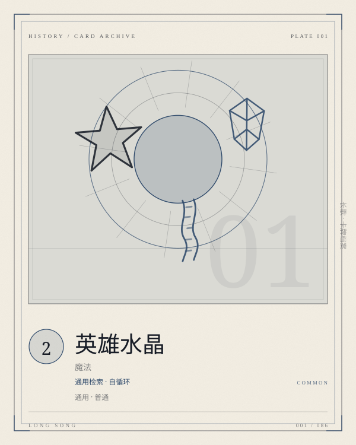

PLATE 001 / 086HERO-CRYSTAL
卡面为程序生成的概念图版；卡文与规则以本页正文为准。
CARD / GENERAL / 魔法
英雄水晶
通用检索 · 自循环
通用普通魔法COST 2检索卡组
抽一张牌，若可能，抽取英雄。将一张「英雄水晶」加入卡组。
- COST
- 2
- C / A / D
- —
- GROUP
- 通用魔法
- LIMIT
- 4构筑上限
归属 通用 · 通用 · 通用 · 普通。上限字段为「4」；原典未列上限的卡，页面不替它补。
关联 LINKS · 出边 + 入边 · 同目标去重
关联不是规则联动。它记录这张卡在设计与叙事上依赖谁、被谁依赖；跨阵营的边只标「对照」。
检索
吹笛人
一费英雄，越早到场越早开始攒御风
检索
旅途的起点
卡组里最常被它找出来的英雄面板之一
检索
纯粹学究
莉莉亚的三套天赋都靠它稳定上手
条件
我们的歌
英雄越多，光环越厚；水晶负责把英雄送到场上
条件
调度
先用水晶找到英雄，调度才有可抽的牌
同族
传召水晶
一对自生成的水晶：一张找英雄，一张找专属
同族
贤者之石
同为「生成自身」的通用引擎，但它只循环一次
对照
阿波罗经络
二费找任意英雄，五费指名斯卡琳
词条 KEYWORDS IN TEXT
卡文没有命中已归档的规则词条。
ARCHIVIST'S NOTE
肥鱼碎碎念
两费抽一张，并随后将一张同名卡加入卡组。按裁定，「抽一张牌，若可能，抽取英雄」仍然是抽一张：从牌堆顶往下找，优先取最近的一张英雄；若牌堆里没有英雄，才取牌堆顶的那张。它不额外抽牌，赚的是「稳定找到英雄」和「卡组里永远还有下一张」。
它是整套牌的地基。每位英雄的专属都要求英雄在场，起手能不能看到英雄，直接决定前三回合的节奏。四张满编的英雄水晶，本质上是把「英雄上手」从运气问题改成了概率问题。
我唯一想追问的是：当卡组里有两位以上英雄时，这一次定向抽取由谁选择？原典没有写死。比赛层面需要一个约定，我倾向于由使用者选择——否则「多英雄卡组」的构筑空间会被这条模糊吃掉。
—— 归档者，读这张卡的时候